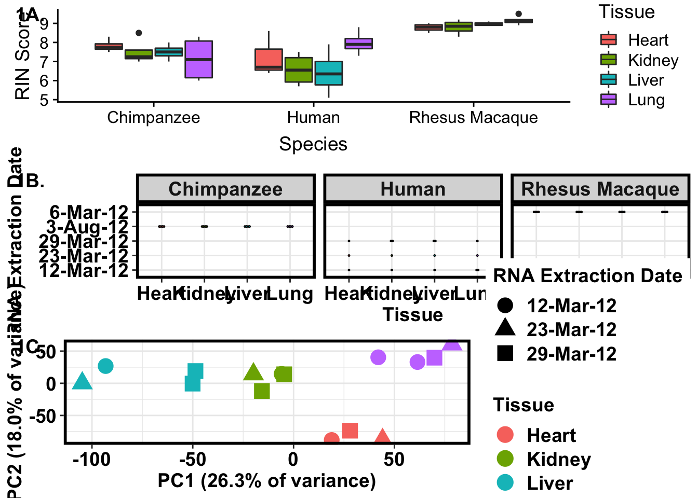

This is an R Markdown document to generate plots of technical versus biological factors of interest.
# Load libraries
library(plyr)
library(dplyr)Warning: package 'dplyr' was built under R version 3.4.4
Attaching package: 'dplyr'The following objects are masked from 'package:plyr':
arrange, count, desc, failwith, id, mutate, rename, summarise,
summarizeThe following objects are masked from 'package:stats':
filter, lagThe following objects are masked from 'package:base':
intersect, setdiff, setequal, unionlibrary("tidyr")Warning: package 'tidyr' was built under R version 3.4.4library("RColorBrewer")
library("ggplot2")Warning: package 'ggplot2' was built under R version 3.4.4library("cowplot")Warning: package 'cowplot' was built under R version 3.4.4
Attaching package: 'cowplot'The following object is masked from 'package:ggplot2':
ggsavecolors <- colorRampPalette(c(brewer.pal(9, "Blues")[1],brewer.pal(9, "Blues")[9]))(100)
pal <- c(brewer.pal(9, "Set1"), brewer.pal(8, "Set2"), brewer.pal(12, "Set3"))
bjp<-
theme(
panel.border = element_rect(colour = "black", fill = NA, size = 2),
plot.title = element_text(size = 16, face = "bold", hjust = 0.5),
axis.text.y = element_text(size = 14,face = "bold",color = "black"),
axis.text.x = element_text(size = 14,face = "bold",color = "black"),
axis.title.y = element_text(size = 14,face = "bold"),
axis.title.x = element_text(size = 14,face = "bold"),
legend.text = element_text(size = 14,face = "bold"),
legend.title = element_text(size = 14,face = "bold"),
strip.text.x = element_text(size = 14,face = "bold"),
strip.text.y = element_text(size = 14,face = "bold"),
strip.background = element_rect(colour = "black", size = 2))
# Load data
## Load counts
cpm_12184 <- read.delim("../../../Reg_Evo_Primates/data/PC_cpm_cyclic_loess_random_var_gene_exp")
## RNA-seq
sample_info_RNAseq <- read.csv("../../../Reg_Evo_Primates/data/Sample_info_RNAseq.csv")
sample_features <- sample_info_RNAseq[-17,]
# Retrieve RIN score for each sample
RNA_seq_info <- read.csv("../../../Reg_Evo_Primates/data/RNA_seq_info.csv")
RIN <- as.data.frame(RNA_seq_info[,22])
RIN <- as.matrix(RIN)
#RIN <- as.data.frame(RIN[-1,])
#RIN <- as.matrix(RIN)
colnames(RIN) <- c("RIN")plot.RIN <- ggplot(sample_features, aes(x = Tissue, y = RIN.score, fill = Species)) +
geom_boxplot() +
labs(x = "Tissue", y = "RIN Score") + ggtitle("RIN score by tissue and species") + theme(legend.position = "top") + scale_fill_discrete(name = c("Species"), breaks = c("Chimp", "Human", "Rhesus"), labels = c("Chimpanzee", "Human", "Rhesus Macaque")) + scale_x_discrete(name = c("Tissue"), labels = c("Heart", "Kidney", "Liver", "Lung"))
plot.RIN2 <- ggplot(sample_features, aes(x = Species, y = RIN.score, fill = Tissue)) +
geom_boxplot() +
labs(x = "Species", y = "RIN Score") + theme(legend.position = "right") + scale_fill_discrete(name = c("Tissue"), labels = c("Heart", "Kidney", "Liver", "Lung")) + scale_x_discrete(name = c("Species"), breaks = c("chimpanzee", "human", "rhesus macaque"), labels = c("Chimpanzee", "Human", "Rhesus Macaque"))
ggplot(sample_features, aes(x = as.factor(Tissue), y = RIN.score, (fill = as.factor(Species)))) + geom_point() + labs(x = "Tissue", y = "RIN Score") + ggtitle("RIN score of Samples") + scale_x_discrete(name = c("Tissue"), labels = c("Heart", "Kidney", "Liver", "Lung"))# Get extraction date
sample_features <- read.csv("../../../Reg_Evo_Primates/data/RNA_seq_info.csv")
#sample_features <- sample_info_RNAseq[-17,]
levels(sample_features$Species) <- c("Chimpanzee", "Human", "Rhesus Macaque")
plot.RNA.extract <- ggplot(sample_features, aes(x = Tissue, y = RNA.extraction.date, fill = Tissue)) +
geom_dotplot(binaxis = 'y', stackdir = 'center', dotsize = 0.8) + facet_grid(.~Species) +
labs(x = "Species", y = "RNA Extraction Date") + scale_x_discrete(name = c("Tissue"), labels = c("Heart", "Kidney", "Liver", "Lung")) + guides(fill=FALSE) + theme_bw() + bjp
plot.RNA.extract`stat_bindot()` using `bins = 30`. Pick better value with `binwidth`.c("H", "K", "Li", "Lu")[1] "H" "K" "Li" "Lu"human_cpm <- cpm_12184[,17:31]
human_features <- RNA_seq_info[17:31,]
pca_genes <- prcomp(t(human_cpm), scale = T, center = T)
matrixpca <- pca_genes$x
pc1 <- matrixpca[,1]
pc2 <- matrixpca[,2]
pc3 <- matrixpca[,3]
pc4 <- matrixpca[,4]
pc5 <- matrixpca[,5]
pcs <- data.frame(pc1, pc2, pc3, pc4, pc5)
summary <- summary(pca_genes)
plot.human.pca <- ggplot(data=pcs, aes(x=pc1, y=pc2, color=human_features$Tissue, shape = as.factor(human_features$RNA.extraction.date))) + geom_point(size = 5) + xlab("PC1 (26.3% of variance)") + ylab("PC2 (18.0% of variance)") + scale_size(guide = 'none') + theme(legend.position = "right") + scale_color_discrete(name = c("Tissue"), breaks = c("heart", "kidney", "liver", "lung"), labels = c("Heart", "Kidney", "Liver", "Lung")) + scale_shape_discrete(name = c("RNA Extraction Date")) + theme_bw() + bjp
cor(pc1, as.numeric(human_features$Individual))[1] 0.1622145cor(pc2, as.numeric(human_features$Individual))[1] -0.1317682cor(pc3, as.numeric(human_features$Individual))[1] -0.05736749cor(pc4, as.numeric(human_features$Individual))[1] -0.1486696cor(pc5, as.numeric(human_features$Individual))[1] 0.5725247#pdf("./plot.human.pca.pdf")
#plot.human.pca
#dev.off()plot_grid(plot.RIN2, plot.RNA.extract, plot.human.pca, labels = c("1A.", "1B.", "1C."), ncol = 1)`stat_bindot()` using `bins = 30`. Pick better value with `binwidth`.
#p3 <- ggdraw()+draw_image("./plot.human.pca.pdf")
plot_final <- plot_grid(plot.RIN2, plot.RNA.extract, plot.human.pca, labels = c("1A.", "1B.", "1C."), ncol = 1)`stat_bindot()` using `bins = 30`. Pick better value with `binwidth`.save_plot("/Users/laurenblake/Dropbox/Tissue_paper/Supplement/Supp_figures/Supplementary_Figure_1AC_Tech_Factors.pdf", plot_final,
ncol = 1, # we're saving a grid plot of 2 columns
nrow = 2, # and 2 rows
# each individual subplot should have an aspect ratio of 1.3
base_aspect_ratio = 1.3)